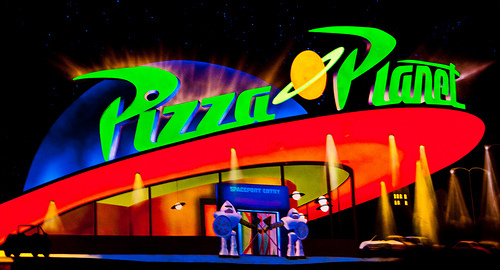
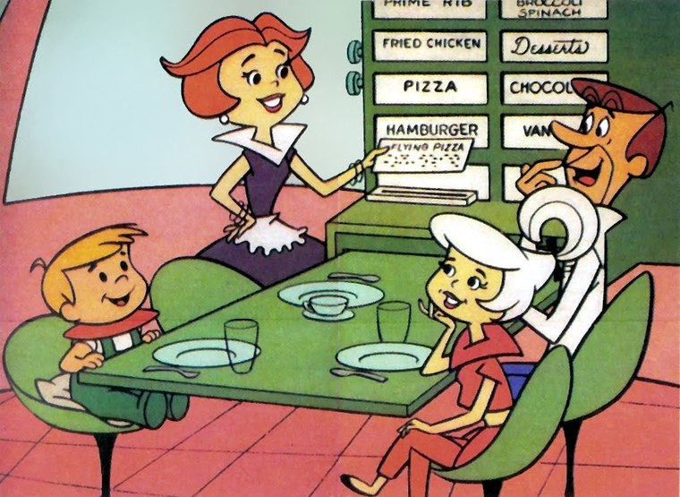

Serving the best pizza in the universe! There is something for everyone at Pizza Planet. Try one
of our specialty pizzas or build it the way you like. We also have salads, pasta, entrees, and kids
meals. Finish it off with one of our delectable dessert pizzas! They're truly out of this world!
Hours
Mon - Thur: 11am to 9pm
Fri - Sat: 11am to 10pm
Sun: Closed

Hard to believe, but the founding family for Pizza Planet is none other than the Jetsons. Every
Friday night, Jane prepared unique pizzas for the family. Her secret recipe for Flying Sausage
Pizza made her popular in the solar system. She continually expanded her pizza recipes and
eventually opened the first Pizza Planet restaurant in Saturn. (Texas that is.)
Today there are multiple locations with a popular following. Be sure to stop in and say hi. Who
knows, you might just catch George, Elroy, Judy, or Jane in the restaurant.